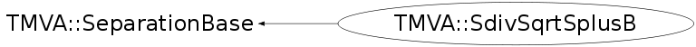

class TMVA::SdivSqrtSplusB: public TMVA::SeparationBase
Function Members (Methods)
public:
| virtual | ~SdivSqrtSplusB() |
| static TClass* | Class() |
| const TString& | TMVA::SeparationBase::GetName() |
| Double_t | TMVA::SeparationBase::GetSeparationGain(const Double_t& nSelS, const Double_t& nSelB, const Double_t& nTotS, const Double_t& nTotB) |
| virtual Double_t | GetSeparationIndex(const Double_t& s, const Double_t& b) |
| virtual TClass* | IsA() const |
| TMVA::SdivSqrtSplusB& | operator=(const TMVA::SdivSqrtSplusB&) |
| TMVA::SdivSqrtSplusB | SdivSqrtSplusB() |
| TMVA::SdivSqrtSplusB | SdivSqrtSplusB(const TMVA::SdivSqrtSplusB& g) |
| virtual void | ShowMembers(TMemberInspector& insp) |
| virtual void | Streamer(TBuffer& b) |
| void | StreamerNVirtual(TBuffer& b) |
Data Members
protected:
| TString | TMVA::SeparationBase::fName | name of the concrete Separation Index impementation |
| Double_t | TMVA::SeparationBase::fPrecisionCut |
Class Charts
{kind=link}
{kind=link}
{kind=link}
{kind=link}

Function documentation
Double_t GetSeparationIndex(const Double_t& s, const Double_t& b)
Index = S/sqrt(S+B) (statistical significance)